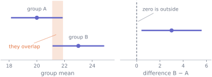
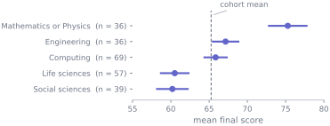
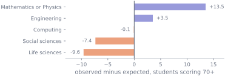

Almost every applied question is a comparison. Did the treated group do better than the untreated one? Do students from one background finish further ahead than students from another? Is the completion rate different for people who used the forum?
The quantity you care about is the difference, and the thing to report is that difference with an interval around it. This unit shows how to get one for two means and for two proportions, how to handle a table of counts, and — most importantly — why looking at two separate intervals and checking whether they overlap is not a substitute for computing the interval for the difference.
10.1 Before you start
You should be able to:
read a \(p\)-value correctly and state the duality with a confidence interval — S9;
summarise the relationship between a categorical and a quantitative variable — S3.
Quick check. Two groups have means 40 and 46. Their standard errors are both 2. Roughly what is the standard error of the difference between the means?
TipShow the answer
\(\sqrt{2^2 + 2^2} = \sqrt{8} = 2.83\).
Not 2, and not 4. Standard errors, like standard deviations, combine through their squares — the variance rule from S5. Getting this wrong is the arithmetic behind the commonest mistake in the unit.
10.2 The idea
Take the two most different backgrounds in the cohort.
import numpy as npimport pandas as pdfrom scipy import statscohort = pd.read_csv("data/cohort.csv")usable = cohort.dropna(subset=["background", "final_score"])usable = usable[usable["final_score"].between(0, 100)]life = usable[usable["background"] =="Life sciences"]["final_score"].to_numpy()maths = usable[usable["background"] =="Mathematics or Physics"]["final_score"].to_numpy()for name, group in [("Life sciences", life), ("Maths or Physics", maths)]: se = group.std(ddof=1) / np.sqrt(group.size)print(f"{name:<18} n = {group.size:>3} mean {group.mean():6.2f} "f"sd {group.std(ddof=1):5.2f} se {se:.2f}")
Life sciences n = 57 mean 60.51 sd 7.29 se 0.97
Maths or Physics n = 36 mean 75.28 sd 7.63 se 1.27
Two means, 60.51 and 75.28. The comparison people report is often “both means with their intervals, and look, they do not overlap”. That happens to work here, and in general it is the wrong tool.
The difference is a quantity in its own right. It has an estimate, a standard error and an interval, and none of the three can be read reliably off a picture of the two groups separately.

Figure 37.1: A constructed example, because the cohort’s own groups are too far apart to make the point. Two groups of 30 with means 20 and 23 and standard deviations of 5: their 95% intervals overlap, and yet the interval for the difference excludes zero and the test rejects at \(p = 0.024\). Overlapping intervals do not mean no difference.
Two intervals that overlap can still correspond to a difference significantly away from zero, because the standard error of the difference is \(\sqrt{\text{SE}_A^2 + \text{SE}_B^2}\) — always smaller than the sum \(\text{SE}_A + \text{SE}_B\), which is roughly what the eyeball comparison uses.
The error runs one way, and it is worth knowing which. Non-overlapping intervals do imply a significant difference, so the eyeball test never invents a difference — it misses real ones. In the example above it only declares a difference when \(|t| > 2.89\), which is a test at about the 0.5% level dressed up as one at 5%. Being conservative sounds safe until you remember that missing real differences is exactly what an underpowered analysis does.
10.3 The mechanics
Two means, unpaired
The estimate is \(\bar{x}_A - \bar{x}_B\). Its standard error is
and the interval is the estimate plus or minus \(t^{*}\,\text{SE}\). The test statistic is the estimate divided by its standard error, exactly as in S9.
There are two versions of this test. The pooled (“Student”) version assumes the two populations have the same variance and combines them into one estimate. Welch’s version does not, and adjusts the degrees of freedom instead. Welch is the better default: it costs almost nothing when the variances really are equal and it is substantially better when they are not, and you never actually know which case you are in. scipy.stats.ttest_ind uses the pooled version unless you pass equal_var=False, which you usually should.
Two means, paired
If each observation in one group is matched to one in the other — the same person before and after, the same field split into two halves — then do not use the two-sample test. Take the differences within pairs and analyse those single numbers with a one-sample test.
This is not a technicality; it is usually a large gain. Pairing removes the between-subject variation, which is often the largest source of noise, so the paired analysis can be dramatically more precise. Treating paired data as unpaired throws that away — and, as S8 showed for the bootstrap, the rule is always to respect the unit that was independently sampled.
Two proportions
For a yes/no outcome, the estimate is \(\hat{p}_A - \hat{p}_B\) and
using the Bernoulli variance \(p(1-p)\) from S6. The normal approximation behind that interval needs a reasonable number of successes and failures in each group — a common rule of thumb is at least ten of each — and it fails badly for rare events, where exact or score-based intervals should be used instead. For a single proportion SciPy gives both, as stats.binomtest(k, n).proportion_ci(method="exact") or method="wilson"; here it is enough to recognise when you need one.
Report the difference in percentage points, and consider also reporting the ratio; they answer different questions and a change from 1% to 2% is either “one percentage point” or “double”, depending which you choose.
A table of counts: the chi-square test
With two categorical variables you have the contingency table of S3. The chi-square test of independence asks whether the table is compatible with the two variables being unrelated.
If they were independent, S4 says the expected count in a cell would be
Large values mean the observed table is far from what independence predicts. Two warnings. The approximation needs the expected counts to be reasonably large — at least 5 in most cells is the usual rule — and the test tells you only that the table departs from independence, never how or by how much. Always look at the cell-by-cell departures as well.
When the assumptions are uncomfortable
The \(t\)-based methods lean on the sampling distribution of the mean being roughly normal, which S7 showed can fail for small, skewed samples. Two alternatives:
the bootstrap of S8, applied to the difference — it assumes no shape at all and gives you an interval directly;
a rank-based test such as Mann–Whitney, which asks about the probability that a randomly chosen value from one group exceeds one from the other. Note that it answers a different question: it is not a test about means, and it is not a general test of whether the two distributions differ — two distributions with the same centre and different spreads give it nothing to find.
10.4 Worked example
How far ahead do the Maths and Physics students finish?
difference in means : 14.7655 marks
standard error : 1.5969
95% interval : (11.5821, 17.9489)
Welch t = 9.2461 df = 72.01 p = 7.28e-14
The sentence to report: students arriving from Mathematics or Physics finished 14.8 marks ahead of students from life sciences (95% CI 11.6 to 17.9). That is an estimate, in the units of the thing measured, with its uncertainty attached. The \(p\)-value adds only that a gap this large would essentially never arise from 93 students if the two populations had the same mean — which the interval, sitting a long way from zero, had already made obvious.
Both versions of the test, for comparison, and a rank-based one:
print(f"Welch (unequal variances) p = {welch.pvalue:.3e}")print(f"pooled (equal variances) p = {stats.ttest_ind(maths, life).pvalue:.3e}")print(f"Mann-Whitney p = {stats.mannwhitneyu(maths, life).pvalue:.3e}")
Welch (unequal variances) p = 7.277e-14
pooled (equal variances) p = 6.028e-15
Mann-Whitney p = 7.992e-12
Here the group standard deviations are 7.63 and 7.29, so pooling changes almost nothing. The habit worth forming is using Welch anyway, because the case where it matters is exactly the case where you would not have noticed.
Now all five groups at once, which is what a reader actually wants to see:

Figure 37.2: Every background’s mean final score with a 95% interval, ordered. Reading pairwise comparisons off this picture is exactly what the first figure warned against — but as a description of where the five groups sit, and of how much less is known about the smaller ones, it is the right display.
A categorical outcome. Does the chance of scoring 70 or more depend on background at all?
below 70 70 or more
background
Computing 49 20
Engineering 22 14
Life sciences 50 7
Mathematics or Physics 12 24
Social sciences 35 4
chi-square = 40.813 df = 4 p = 2.94e-08
smallest expected count = 10.48

Figure 37.3: Observed counts minus the counts independence predicts, for the ‘70 or more’ column. Two groups have far more high scorers than independence would give them and two have far fewer — which is what the chi-square statistic adds up, and what its single number then hides.
The statistic is 40.8 on 4 degrees of freedom, \(p \approx 3 \times 10^{-8}\): the table is a long way from independence. But the statistic alone would not have told you how. The departures do: Mathematics or Physics contributes 13.5 more high scorers than independence predicts, and life sciences 9.6 fewer.
10.5 Try it yourself
Exercise 1 Group A: \(n = 50\), mean 12.0, sd 4.0. Group B: \(n = 50\), mean 14.0, sd 5.0.
Compute the standard error of the difference.
Give an approximate 95% interval for the difference (use \(t^{*} \approx 2\)).
Would you reject \(H_0\): no difference, at the 5% level?
Take the difference as B minus A, so \(+2.0\) — the sign is yours to choose and yours to state. \(2.0 \pm 2 \times 0.906 = 2.0 \pm 1.81\), so \((0.19, 3.81)\).
Yes — zero is outside the interval, so the test rejects. But notice how close it is: the interval reaches almost to zero, and the data are consistent with a difference as small as 0.2 units. If a difference of 0.2 would not matter in practice, “significant” is a very weak thing to have shown, and the interval is what makes that visible.
Exercise 2 A trial measures blood pressure in 40 patients before and after a treatment. Someone runs a two-sample \(t\)-test comparing the 40 “before” values with the 40 “after” values.
What is wrong?
What should they do?
Which analysis is likely to give the narrower interval, and why?
TipShow the solution
The two samples are not independent — they are the same 40 people measured twice. The two-sample formula assumes independence between the groups, and here each “after” value is strongly related to its own “before” value.
Compute the 40 within-patient differences and analyse those with a one-sample test or interval. One number per patient, 40 independent units.
The paired analysis, usually by a wide margin. The two-sample standard error is driven by how much patients differ from each other, which for blood pressure is a great deal. The paired standard error is driven only by how much each patient changed, which is typically much smaller. Pairing removes the between-patient variation instead of measuring it.
The exception is worth knowing: if before and after were negatively correlated, pairing would make things worse. That is rare, and the safe rule remains to analyse the design you actually ran.
Exercise 3 Two teaching methods are compared. Method A: 30 of 100 students passed. Method B: 45 of 100 passed.
Compute the difference in proportions and its standard error.
Give an approximate 95% interval.
A colleague reports the result as “method B is 50% better”. Is that fair?
TipShow the solution
\(\hat{p}_A = 0.30\), \(\hat{p}_B = 0.45\). Taking the difference as B minus A — again, say which — it is \(+0.15\).
\(0.15 \pm 1.96 \times 0.0676 = 0.15 \pm 0.133\), giving \((0.017, 0.283)\) — 1.7 to 28.3 percentage points. Zero is outside, but only just, and the data are consistent with almost anything from a negligible improvement to a very large one.
It is arithmetically true and rhetorically misleading. \(0.45/0.30 = 1.5\), so the pass rate is indeed 50% higher in relative terms. But the same difference stated as “15 percentage points” sounds quite different, and the relative version conceals how uncertain it is: the interval on the ratio runs from about 1.05 to 2.1. Report the difference in percentage points, give the interval, and give the ratio too if it helps — never the ratio alone.
10.6 Check it in Python
First, that the standard error of a difference really does combine through squares. Simulate two independent groups and compare.
rng = np.random.default_rng(2026)n_a, n_b, sd_a, sd_b =40, 60, 8.0, 5.0a = rng.normal(50, sd_a, size=(50_000, n_a)).mean(axis=1)b = rng.normal(55, sd_b, size=(50_000, n_b)).mean(axis=1)print(f"se of mean A {a.std():.4f} formula {sd_a/np.sqrt(n_a):.4f}")print(f"se of mean B {b.std():.4f} formula {sd_b/np.sqrt(n_b):.4f}")print(f"se of difference {(b - a).std():.4f} "f"formula {np.sqrt(sd_a**2/n_a + sd_b**2/n_b):.4f}")print(f" NOT the sum of the two: {sd_a/np.sqrt(n_a) + sd_b/np.sqrt(n_b):.4f}")
se of mean A 1.2635 formula 1.2649
se of mean B 0.6464 formula 0.6455
se of difference 1.4181 formula 1.4201
NOT the sum of the two: 1.9104
Now the check that fails, and it is the mistake the unit opened with. Assert that two overlapping 95% intervals mean the difference is not significant:
def make_group(centre, spread, size):"""A sample of `size` values with exactly this mean and standard deviation.""" z = rng.normal(0, 1, size)return centre + spread * (z - z.mean()) / z.std(ddof=1)group_a, group_b = make_group(20.0, 5.0, 30), make_group(23.0, 5.0, 30)def own_interval(values): half = (stats.t.ppf(0.975, values.size -1)* values.std(ddof=1) / np.sqrt(values.size))return values.mean() - half, values.mean() + halflo_a, hi_a = own_interval(group_a)lo_b, hi_b = own_interval(group_b)overlap = lo_b <= hi_acomparison = stats.ttest_ind(group_b, group_a, equal_var=False)assertnot (overlap and comparison.pvalue <0.05), (f"intervals ({lo_a:.2f}, {hi_a:.2f}) and ({lo_b:.2f}, {hi_b:.2f}) overlap, "f"yet the difference has p = {comparison.pvalue:.3f}")
---------------------------------------------------------------------------AssertionError Traceback (most recent call last)
CellIn[9], line 18 15 overlap = lo_b <= hi_a
16 comparison = stats.ttest_ind(group_b, group_a, equal_var=False)
---> 18assertnot (overlap and comparison.pvalue < 0.05), (
19f"intervals ({lo_a:.2f}, {hi_a:.2f}) and ({lo_b:.2f}, {hi_b:.2f}) overlap, " 20f"yet the difference has p = {comparison.pvalue:.3f}" 21 )
AssertionError: intervals (18.13, 21.87) and (21.13, 24.87) overlap, yet the difference has p = 0.024
The two intervals share the range from 21.13 to 21.87, and the difference is significant at the 5% level anyway. The eyeball test is a different, stricter comparison: here it would have required the two means to differ by 3.73 rather than the 2.58 the proper test asks for. It agrees with the real answer much of the time and errs by staying silent, which is the failure mode that is easiest to miss.
Finally, the chi-square statistic, computed by hand against the library, so the formula stops being a black box:
by hand 40.812864 scipy 40.812864 agree: True
df = (rows - 1)(cols - 1) = 4 scipy says 4
10.7 Common wrong turns
Where this usually goes wrong
Comparing two intervals by eye instead of computing the difference
Overlapping intervals can hide a significant difference and non-overlapping ones can exaggerate. The difference has its own standard error, \(\sqrt{\text{SE}_A^2 + \text{SE}_B^2}\), and its own interval. Compute it.
Adding standard errors instead of adding their squares
\(\text{SE}_A + \text{SE}_B\) is always too big. Square, add, take the root — the variance rule of S5.
Using a two-sample test on paired data
Before-and-after on the same people, matched pairs, two measurements per site. Take the within-pair differences and analyse those. Ignoring the pairing throws away the design’s whole advantage.
Reporting only the \(p\)-value for a comparison
“The groups differed significantly (\(p < 0.001\))” tells the reader nothing about how much. Give the difference in real units with its interval; that is the finding.
Treating a significant chi-square as an explanation
It says the table departs from independence and nothing more. Look at the cell-by-cell departures, and be careful with small expected counts, where the approximation is unreliable.
Confusing a rank test with a test about means
Mann–Whitney compares distributions, not means. Two distributions with the same mean can differ by it, and two with different means need not. Report what you actually tested.
Comparing many groups and reporting the biggest gap
Five groups make ten pairwise comparisons, and with ten tests at 5% a “significant” result is likely from noise alone. Say how many comparisons you made — S12 says what to do about it.
10.8 Check yourself
Answers are at the foot of the page. Give a reason as well as an answer.
Two independent group means have standard errors 3 and 4. What is the standard error of their difference?
1
5
7
25
Uncertainty in two estimates does not cancel when you subtract one from the other.
Standard errors do not add. Variances do: square, add, then take the square root.
That is the variance of the difference. The question asks for the standard error.
Two 95% intervals for group means overlap slightly. What can you conclude about the difference?
When would you prefer Welch’s test to the pooled two-sample test?
A chi-square test on a \(4 \times 3\) table gives \(p = 0.001\). What have you learned?
A study reports that a treatment “halves the risk”. The risk went from 0.02% to 0.01%. Is the reporting fair?
TipShow the answers
(b), 5.\(\sqrt{3^2 + 4^2} = \sqrt{25} = 5\). Option (c) adds the standard errors, which is what you would get only if the two estimates were perfectly negatively correlated — the covariance term \(-2\rho\,\text{SE}_A \text{SE}_B\) is largest when \(\rho = -1\); (d) is the variance, not the standard error.
Almost nothing on its own. Overlap is compatible with a difference that is significant and with one that is not; the answer depends on the two sample sizes and standard deviations. Compute the interval for the difference — it takes one line and it is the quantity of interest anyway.
Essentially always. Welch does not assume equal variances, costs almost nothing when they happen to be equal, and is much safer when they are not — particularly when the group sizes also differ, which is when the pooled test goes wrong most badly. The one thing you should not do is test for equal variances first and choose on the result, which distorts the error rate of everything downstream.
That the table is inconsistent with the two variables being independent. You have not learned which cells drive it, in which direction, or how large the departure is in any practical sense — and with a large enough table and sample, a trivial departure produces a small \(p\). Look at observed minus expected next.
Not on its own. The relative statement is true and the absolute change is one in ten thousand. Both should be given: “the risk fell from 0.02% to 0.01%, a halving, or one case avoided per 10,000 people treated.” A relative risk with no baseline is the standard way to make a negligible effect sound dramatic.
Where this shows up next
S11 replaces the two-group comparison with a line, which lets the explanatory variable be a number rather than a label — and lets you adjust for a second variable at the same time. S12 returns to the ten pairwise comparisons this unit resisted making, and to what happens when a difference between groups is really a difference in who is in them.